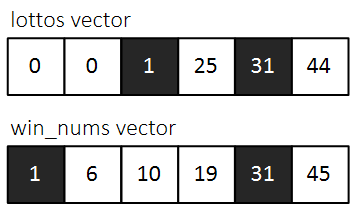
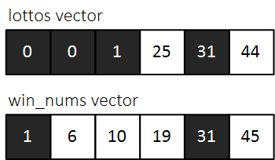

#INFO
문제 이름 : 로또의 최고 순위와 최저 순위
난이도 : LEVEL1
문제 출처 : 2021 Dev-Matching 웹 백엔드 개발
코딩테스트 연습 - 로또의 최고 순위와 최저 순위 | 프로그래머스 (programmers.co.kr)
코딩테스트 연습 - 로또의 최고 순위와 최저 순위
로또 6/45(이하 '로또'로 표기)는 1부터 45까지의 숫자 중 6개를 찍어서 맞히는 대표적인 복권입니다. 아래는 로또의 순위를 정하는 방식입니다. 1 순위 당첨 내용 1 6개 번호가 모두 일치 2 5개 번호
programmers.co.kr
#SOLVE
"0"의 개수와 두 벡터(lottos, win_nums)의 일치하는 원소의 개수에 따라 최고 순위(max_rank)와 최저 순위(min_rank)가 정해진다.
아래와 같이 자신이 구매한 로또 번호의 정보가 들어있는 lottos vector와 당첨 번호가 들어있는 win_nums vector를 예시로 이해해 보자.
두 벡터간 일치하는 원소의 개수는 총 2개(1, 31)이다. 따라서 min_count(일치하는 번호의 최소 개수)의 값은 2이다.

lottos vector에 존재하는 0의 개수는 2개이다. 따라서 max_count(일치하는 번호의 최대 개수)의 값은 "0의 개수(2) + 일치하는 번호의 개수(2)" 4이다.

int max_count = 0, min_count = 0;
for(int i = 0; i < lottos.size(); i++){
if(lottos[i] == 0) max_count++;
for(int j = 0; j < win_nums.size(); j++){
if(lottos[i] == win_nums[j]){
max_count++;
min_count++;
}
}
}
앞서 구한 max_count와 min_count를 토대로 max_rank와 min_rank를 계산하여 answer vector에 푸시해 리턴해 주면 된다.
#CODE
#include <string>
#include <vector>
using namespace std;
vector<int> solution(vector<int> lottos, vector<int> win_nums) {
vector<int> answer;
int max_count = 0, min_count = 0;
for(int i = 0; i < lottos.size(); i++){
if(lottos[i] == 0) max_count++;
for(int j = 0; j < win_nums.size(); j++){
if(lottos[i] == win_nums[j]){
max_count++;
min_count++;
}
}
}
int max_rank = 0;
int min_rank = 0;
if(max_count == 6) max_rank = 1;
else if(max_count == 5) max_rank = 2;
else if(max_count == 4) max_rank = 3;
else if(max_count == 3) max_rank = 4;
else if(max_count == 2) max_rank = 5;
else max_rank = 6;
if(min_count == 6) min_rank = 1;
else if(min_count == 5) min_rank = 2;
else if(min_count == 4) min_rank = 3;
else if(min_count == 3) min_rank = 4;
else if(min_count == 2) min_rank = 5;
else min_rank = 6;
answer.push_back(max_rank);
answer.push_back(min_rank);
return answer;
}